1. Introduction
This documentation presents my Cloud Services Week 6 work. In this week, I worked with CI/CD automation, GitHub Actions, container images, Rahti/OpenShift deployments, health probes and backend logging.
The main goal was to move part of the application deployment process from manual commands towards an automated CI/CD workflow. I used GitHub Actions to build the backend container image, push it to GitHub Container Registry (GHCR), and update the backend deployment in the Rahti/OpenShift environment.
I also added and tested liveness and readiness probes for the backend. In addition, the backend produces structured logs that contain information such as the request path, HTTP method, status code and response time.
2. Part A - Questions and Answers
2.1 What is the difference between Continuous Integration, Continuous Delivery and Continuous Deployment?
Continuous Integration (CI) means that developers regularly integrate their code changes into a shared repository. When a change is pushed, an automated process can build the application and run tests. The purpose is to find integration problems early, instead of discovering them much later when many changes have already been made.
Continuous Delivery is the next step. The application is automatically built, tested and prepared so that it is ready to be released. However, the final release can still require a person to decide when the deployment should happen. This gives the development team more control over when a release is made.
Continuous Deployment goes one step further. When the automated build and required checks are successful, the new version can be deployed automatically to the target environment. There is no separate manual deployment step for every successful change.
In my Week 6 project, the workflow follows the Continuous Deployment idea. A push to the main branch starts the GitHub Actions workflow. The workflow builds the backend container image, pushes the image to GHCR and updates the backend Deployment in Rahti/OpenShift.
This automation is useful because the same deployment process can be repeated for future changes. It also reduces the number of manual commands that have to be performed after every change. The container image is tagged using the Git commit SHA, which makes it easier to connect the deployed image with the source code version that produced it.
GitHub Docs - GitHub Actions Quickstart:
https://docs.github.com/en/actions/writing-workflows/quickstart
Atlassian - Continuous Integration, Delivery and Deployment:
https://www.atlassian.com/continuous-delivery/principles/continuous-integration-vs-delivery-vs-deployment
2.2 Describe the structure of a GitHub Actions workflow. What would a minimal pipeline for this application need to do?
A GitHub Actions workflow is normally written in a YAML file. The workflow describes when the automation starts and which operations should be performed. Three important parts are triggers, jobs and steps.
A trigger defines when the workflow starts. For example, a workflow can be triggered when a developer pushes new code to the main branch. A job is a group of work performed by GitHub Actions on a runner. Steps are the individual commands or reusable actions inside the job.
For my application, the minimum pipeline needs to check out the repository, build the backend container image, authenticate with the container registry, push the image to GHCR, authenticate with Rahti/OpenShift and update the backend Deployment.
After the deployment is updated, the application should also be checked to make sure that the new pod becomes ready. This is important because successfully building an image does not by itself prove that the application is running correctly in the cluster.
The workflow used in this project can therefore be represented by the following sequence:
push to main
↓
checkout repository
↓
build backend image
↓
push image to GHCR
↓
login to Rahti
↓
oc set image deployment/backend
↓
new deployment
↓
check rolloutThe image is tagged using the Git commit SHA. This gives each built image a unique identifier and makes it possible to see which source-code commit produced the deployed container image. This is useful when investigating a deployment or trying to understand which version is currently running.
GitHub Docs - GitHub Actions Quickstart:
https://docs.github.com/en/actions/writing-workflows/quickstart
GitHub Docs - Workflow syntax for GitHub Actions:
https://docs.github.com/en/actions/writing-workflows/workflow-syntax-for-github-actions
2.3 What is the difference between a liveness probe and a readiness probe?
A liveness probe checks whether an application inside a container is still functioning. It helps Kubernetes or OpenShift detect a container that is running but is no longer responding correctly. If the liveness check repeatedly fails, the platform can restart the container so that the application has a chance to recover.
A readiness probe has a different purpose. It checks whether the application is ready to receive traffic. A container can be running while the application inside it is still starting or otherwise not ready to serve requests.
When a readiness probe fails, the pod can remain in the
Running state but it is not considered ready.
This means that the Service should not send normal traffic to
that pod while it is not ready.
In my Week 6 backend Deployment, both probes use the
/api/health endpoint on port 8000.
The liveness probe checks whether the backend is still responding,
while the readiness probe checks whether it should receive
Service traffic.
I also tested the readiness probe deliberately. I changed the
readiness path from /api/health to
/wrong-health. The backend container continued
running, but the new pod became 0/1 ready.
The OpenShift events showed that the readiness probe failed
with HTTP status 404.
After the test, I restored the readiness path to
/api/health. The deployment then rolled out
successfully and the backend returned to the ready state.
This test showed the practical difference between a container
being Running and a pod being Ready.
Kubernetes Documentation - Liveness, Readiness and Startup Probes:
https://kubernetes.io/docs/tasks/configure-pod-container/configure-liveness-readiness-startup-probes/
Google SRE Book - Monitoring Distributed Systems:
https://sre.google/sre-book/monitoring-distributed-systems/
2.4 Why should secrets never be hard-coded into a CI/CD pipeline?
Secrets such as registry tokens, passwords and cluster login credentials should never be written directly into a CI/CD workflow file. The workflow is stored as part of the project repository, so putting a real credential into the YAML file could expose that credential to people who can access the repository.
A leaked credential can be especially dangerous when it provides access to a container registry or a Kubernetes/OpenShift cluster. Someone who obtains the credential could potentially push images, access resources or perform actions that were intended only for the deployment system.
GitHub Actions provides a safer way to handle sensitive values. Secrets can be stored in GitHub repository or environment secrets. The workflow can then reference a secret without placing the actual value directly into the YAML file.
For example, a workflow can refer to a value using an expression
such as secrets.RAHTI_TOKEN. The actual token is kept
outside the source code. If the token needs to be changed or
revoked, it can be updated in the secret settings without changing
the workflow itself.
In my Week 6 documentation, I do not show any real passwords, registry tokens or Rahti credentials. Only the method of using secrets is described. This keeps sensitive information out of the documentation and source code.
GitHub Docs - Using secrets in GitHub Actions:
https://docs.github.com/en/actions/security-for-github-actions/security-guides/using-secrets-in-github-actions
GitHub Docs - About secrets:
https://docs.github.com/en/actions/security-for-github-actions/security-guides/about-secrets
3. Part B - CI/CD Pipeline
3.1 GitHub Actions workflow
The GitHub Actions workflow is stored in the repository under
.github/workflows/. The workflow is triggered by
changes pushed to the main branch.
The workflow checks out the source code, builds the backend container image, pushes the image to GitHub Container Registry and updates the backend Deployment in the Rahti/OpenShift environment.
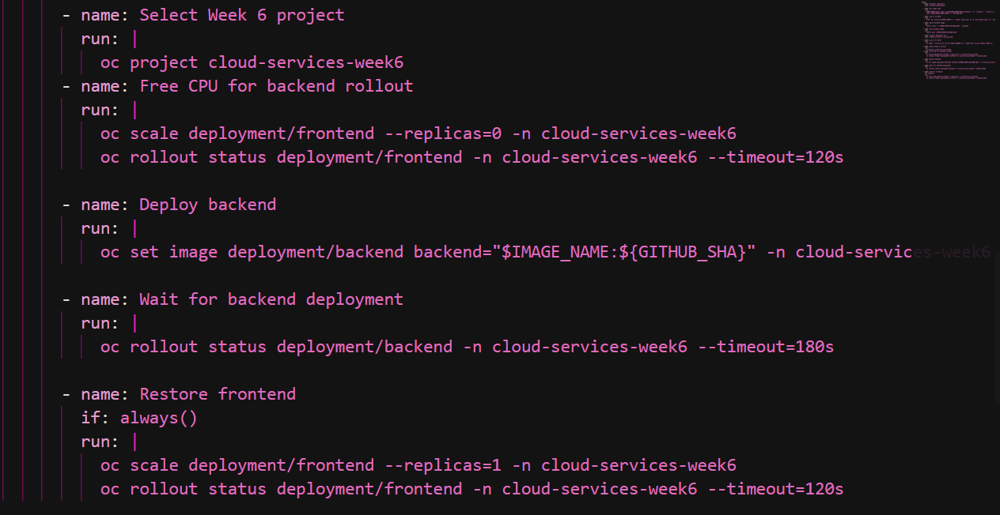
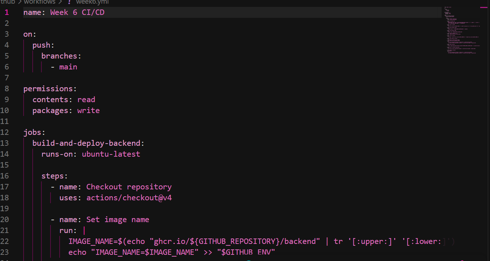
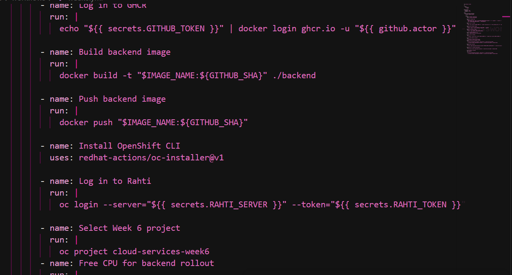
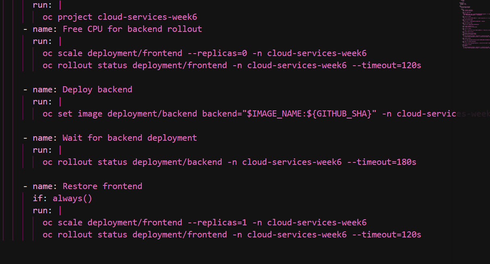
3.1.1 Workflow YAML
The complete workflow used in this project is shown below. It runs when
changes are pushed to the main branch, builds the backend
image using the Git commit SHA, pushes it to GHCR and deploys that image
to the Week 6 Rahti project. Sensitive values are referenced through
GitHub Actions secrets and are not included as real values here.
name: Week 6 CI/CD
on:
push:
branches:
- main
permissions:
contents: read
packages: write
jobs:
build-and-deploy-backend:
runs-on: ubuntu-latest
steps:
- name: Checkout repository
uses: actions/checkout@v4
- name: Set image name
run: |
IMAGE_NAME=$(echo "ghcr.io/${GITHUB_REPOSITORY}/backend" | tr '[:upper:]' '[:lower:]')
echo "IMAGE_NAME=$IMAGE_NAME" >> "$GITHUB_ENV"
- name: Log in to GHCR
run: |
echo "${{ secrets.GITHUB_TOKEN }}" | docker login ghcr.io -u "${{ github.actor }}" --password-stdin
- name: Build backend image
run: |
docker build -t "$IMAGE_NAME:${GITHUB_SHA}" ./backend
- name: Push backend image
run: |
docker push "$IMAGE_NAME:${GITHUB_SHA}"
- name: Install OpenShift CLI
uses: redhat-actions/oc-installer@v1
- name: Log in to Rahti
run: |
oc login --server="${{ secrets.RAHTI_SERVER }}" --token="${{ secrets.RAHTI_TOKEN }}"
- name: Select Week 6 project
run: |
oc project cloud-services-week6
- name: Free CPU for backend rollout
run: |
oc scale deployment/frontend --replicas=0 -n cloud-services-week6
oc rollout status deployment/frontend -n cloud-services-week6 --timeout=120s
- name: Deploy backend
run: |
oc set image deployment/backend backend="$IMAGE_NAME:${GITHUB_SHA}" -n cloud-services-week6
- name: Wait for backend deployment
run: |
oc rollout status deployment/backend -n cloud-services-week6 --timeout=180s
- name: Restore frontend
if: always()
run: |
oc scale deployment/frontend --replicas=1 -n cloud-services-week6
oc rollout status deployment/frontend -n cloud-services-week6 --timeout=120s3.2 Successful GitHub Actions run
The GitHub Actions workflow completed successfully. The successful run provides evidence that the automated workflow was able to execute the required build, container image and deployment steps.
This is important because the purpose of the CI/CD pipeline is not only to create a container image but also to automate the process of getting the new version into the Rahti environment.
3.3 Deployment change
The backend image is deployed using the Git commit SHA as its image tag. This connects a deployed container image to the exact source-code revision that triggered the workflow. The deployment is then rolled out and the new backend pod must become ready before the deployment is considered successful.
The successful Actions run and the OpenShift rollout together provide evidence that the change travelled from the Git repository through the automated pipeline to the running application.
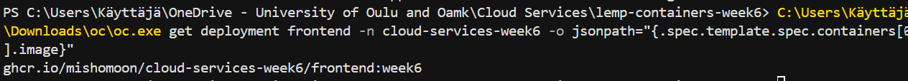
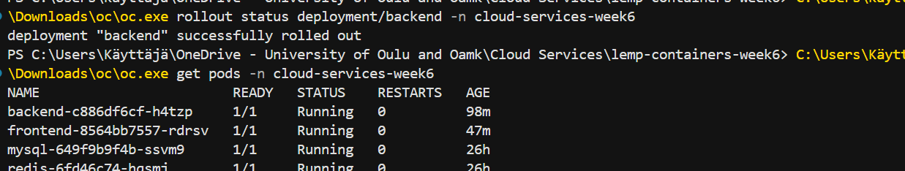
4. Part B - Health Checks
4.1 Liveness probe
The backend liveness probe checks the
/api/health endpoint on port 8000.
The purpose is to detect whether the backend container is still
functioning and responding to requests.
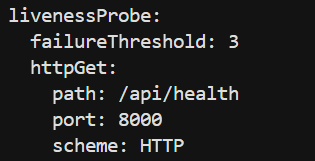
4.2 Readiness probe
The backend readiness probe checks the same health endpoint on
port 8000. The readiness check is used to determine
whether the pod is ready to receive traffic through the Service.
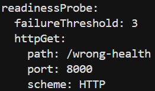
/api/health.
4.3 Deliberately failing the readiness probe
To test the readiness probe, I deliberately changed the readiness
endpoint from /api/health to
/wrong-health.
The backend container continued running, but the pod became
0/1 ready. The readiness probe received an HTTP
404 response because the requested endpoint did
not exist.
This demonstrated that the Running status of a container and the Ready status of a pod are not the same thing. The application can continue running while OpenShift considers the pod not ready for Service traffic.
During the failed readiness test, the new backend pod was not included in the Service endpoints because it was not Ready. The previously healthy backend pod could remain in the endpoints during the rolling update, so traffic could continue to be served by the ready pod.
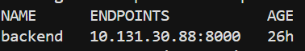
4.4 Recovery
After completing the test, I restored the readiness endpoint to
/api/health. The deployment then rolled out
successfully and the backend returned to the ready state.
This recovery confirmed that the readiness problem was caused by the intentionally incorrect health-check path and that restoring the correct endpoint allowed the backend to become ready again.
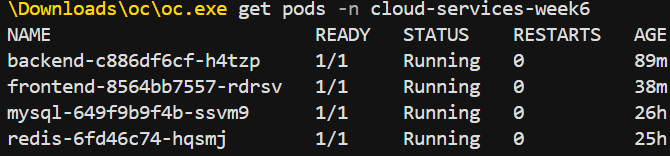
5. Part B - Backend Logging
The backend produces structured log entries containing information about requests received by the application. The log entries include the request path, HTTP method, HTTP status code and response time.
For example, the backend health endpoint produces successful
entries with HTTP status 200. These logs can be used
to understand what requests are reaching the backend and how
quickly the application responds.
I retrieved the logs using the OpenShift oc logs
command. Because the health endpoint is checked regularly, the
output can become very long. I therefore used
--tail=10 to display only the latest ten entries.
oc logs backend-c886df6cf-h4tzp -n cloud-services-week6 --tail=10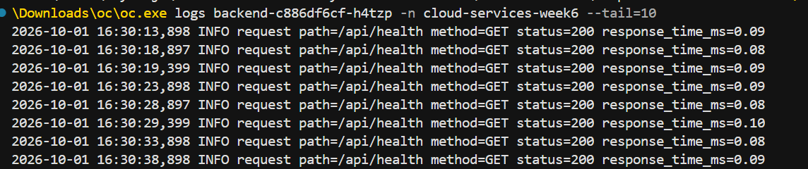
oc logs --tail=10.
5.1 Alerting reflection
In a real production environment, an alert should not be created for every successful health-check request. The backend may receive many successful health checks, and sending an alert for every successful request would create unnecessary noise.
A more useful alert could be triggered when the readiness or liveness checks repeatedly fail, when the application starts returning many HTTP 5xx errors, or when response times remain above an agreed threshold for a period of time.
For a small student project, the alerting system could therefore focus on a few important conditions instead of monitoring every normal event. This would make the alerts easier to understand and reduce unnecessary alert fatigue.
6. Problems Encountered and Solutions
6.1 GHCR image pull problem
The frontend initially used an incorrect GHCR image reference.
Because of this, the OpenShift pod could not pull the requested
image and entered the ErrImagePull and
ImagePullBackOff states.
I checked the deployment image reference and found that the repository name was incorrect. I corrected the image reference to the working GHCR repository. I also linked the GHCR pull secret to the default ServiceAccount so that OpenShift could authenticate when pulling the private image.
After updating the deployment and restarting it, the frontend
pod successfully started and became 1/1 Running.
This showed the importance of using the correct image reference
and providing the required registry credentials.
6.2 Readiness probe problem
For the health-check exercise, I deliberately changed the backend
readiness endpoint from /api/health to
/wrong-health.
The container itself continued running, but the readiness probe
returned HTTP 404. As a result, the new backend pod
became 0/1 ready.
I used oc describe pod to inspect the pod and confirm
that the readiness probe was failing. After restoring
/api/health, the deployment rolled out successfully
and the backend returned to the ready state.
6.3 Long log output
The backend health endpoint is checked regularly, so using
oc logs without limiting the output produced a long
list of health-check requests.
To make the evidence easier to read, I used
oc logs --tail=10. This displayed only the latest
ten entries while still showing the request path, HTTP status and
response time required for the logging part of the exercise. The
repeated /api/health entries are expected because the
health probes call that endpoint regularly.
7. GitHub Repository and Final Evidence
The complete Week 6 project is available in my GitHub repository. The repository contains the application source code, container configuration, OpenShift configuration and GitHub Actions workflow.
GitHub repository:
https://github.com/Mishomoon/cloud-services-week6
The main evidence included in this documentation covers the required Week 6 work:
- Four Part A questions answered in full sentences.
- GitHub Actions workflow for automated deployment, including the workflow YAML.
- Successful GitHub Actions workflow run.
- Backend container image deployment.
- Liveness probe configuration.
- Readiness probe configuration.
- Deliberate readiness-probe failure.
- Recovery after restoring the correct health endpoint.
- Structured backend logging.
- Logs retrieved using
oc logs. - Reflection on useful alerts and alert fatigue.
- Problems encountered and how they were solved, including the Rahti CPU limitation.
8. Conclusion
In Week 6, I moved the application from mainly manual deployment towards a more automated CI/CD process. GitHub Actions builds the backend container image, pushes it to GitHub Container Registry and updates the backend Deployment in the Rahti/OpenShift environment.
I also added and tested liveness and readiness probes. The deliberate readiness-probe failure demonstrated that a container can still be running while the pod is not ready to receive traffic. After restoring the correct health endpoint, the backend became ready again and the deployment completed successfully.
Overall, the Week 6 work helped me understand how CI/CD automation, health probes, logging and secure handling of credentials can be combined when deploying a containerized application to OpenShift.